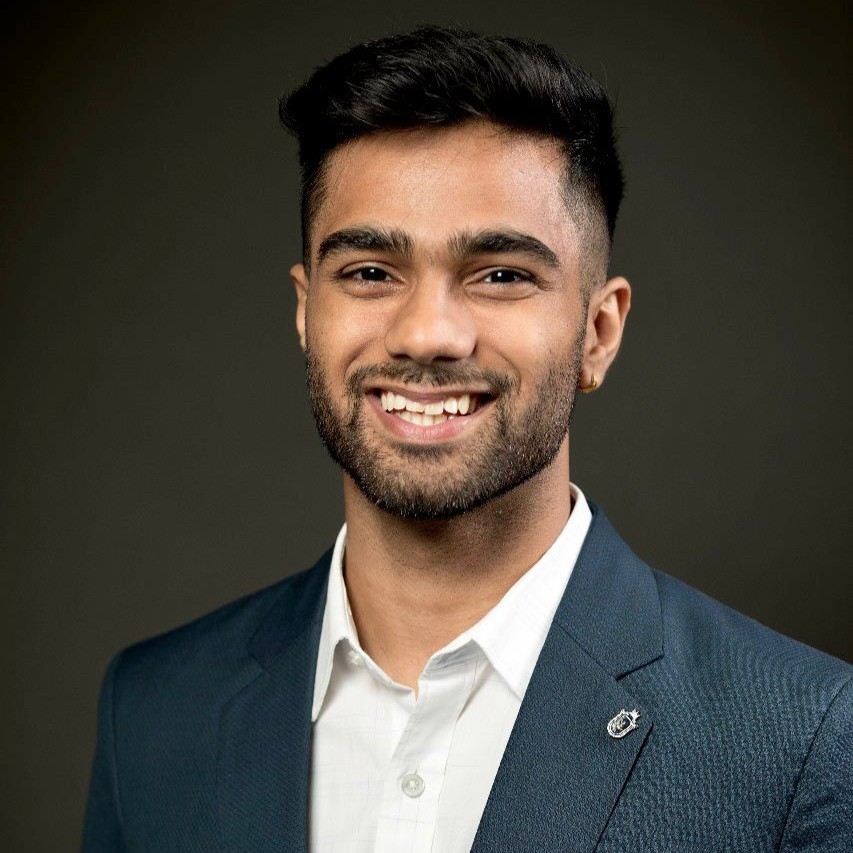

About Me!
Hi, I'm Meetansh, a recent Computer Engineering graduate from Queen’s University, with a strong passion for AI, machine learning, and real-world impact. I recently completed my role as an AI Consultant at QMIND (2022–2024), where I contributed to an NLP chatbot now used by over 100,000 users. My Capstone project on oil spill detection, built using UNet-MobileNetV3 and SAR data, secured 2nd place at Smith Engineering's ECE Showcase 2025.
I'm experienced in deep learning, data analytics, computer vision, and cloud platforms like Google Cloud. My toolkit includes Python, PyTorch, OpenCV, TensorFlow, and more. I'm passionate about building intelligent, ethical systems that address global challenges — one line of code at a time.